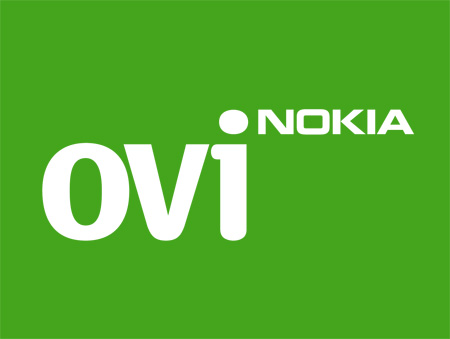

Nokia Austria GmbH Ovi by Nokia, NOKIA Austria GmbH Wienerbergstrasse 11 A-1109 Vienna +43 2682 771-0, www.ovi.com
Ovi - finnisch für Tür - öffnet den Weg zu den innovativen Internetservices von Nokia: Musik, Navigation, Apps, E-Mail und mehr sind auf www.ovi.com vereint. Ovi Maps bietet gratis Kartenmaterial für mehr als 180 Länder. Die kostenlose Auto- und Fußgänger-Navigation wurde seit Jänner 2010 mehr als 10 Millionen heruntergeladen. Der Ovi Store, vor einem Jahr vorgestellt, bietet interessante Programme und Anwendungen und dutzende von lokalen Applikationen. Jeden Tag verzeichnet der Ovi Store 1,7 Millionen Downloads und der durchschnittliche User hat 9,6 Apps auf seinem Gerät installiert. 10 Millionen User nutzen Ovi Mail. Durch die Verbindung von Ovi mit Nokia Mobiltelefonen, Smartphones und mobilen Computern entstehen umfassende Lösungen für alle Kundinnen und Kunden.